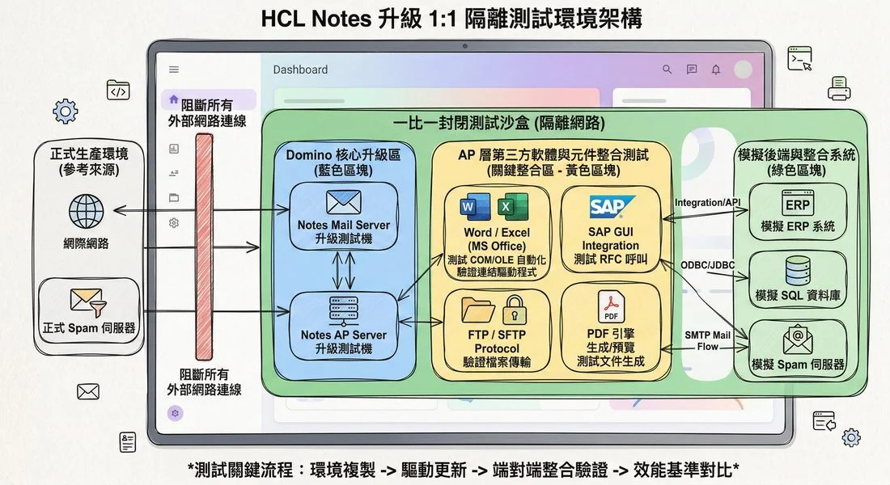
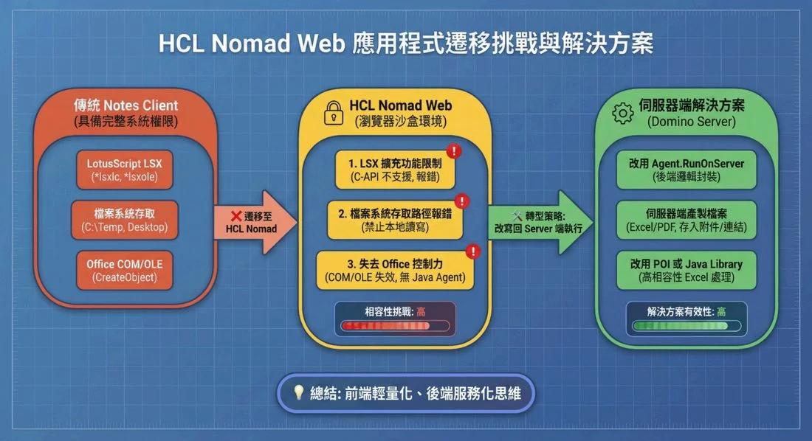

HCL Notes / Domino — 告別技術負債，安全走向現代化
從授權健檢、無痛版本升級，到整合 Domino IQ 企業 AI 與 Nomad Web，為您累積多年的系統重新注入現代化生命力。
遲遲不敢升級
Domino？
我們深知企業的顧慮
許多企業深知系統逐漸老舊，但卻因為「害怕資料搬遷的遺失風險」或「擔憂累積多年的 Notes AP 無法運作」，而選擇讓伺服器停留在舊版本。然而，維持現狀的風險可能遠超乎想像。
舊版本 = 高度資安風險
根據卡巴斯基全球企業 IT 安全調查指出，運行舊軟體的公司中，高達 65% 遭受過資料外洩。讓核心系統留在舊版本意味著：
- •安全性漏洞：駭客更容易利用已知漏洞，成為勒索軟體與資料外洩的破口。
- •相容性問題：過時的底層架構無法與新版作業系統 (OS) 配合，也無法與現代化 API 進行整合。
- •效能與使用者體驗低落：運作緩慢、介面老舊，甚至必須強制員工安裝舊版 Client 端才能勉強辦公，嚴重影響團隊生產力。
升級 HCL V12/V14，一次擁有四大現代化優勢
升級到最新版 Domino 不僅是為了修補資安漏洞，更是解鎖現代化功能、帶動企業效能的關鍵施力點。您的現有投資完全不需要砍掉重練：
psychologyHCL Domino IQ：內建企業專屬 AI
真正落地的企業 AI。內建離線大型語言模型 (LLM)，資料完全不出 Domino 環境，不與外部連線。具備信件自動總結、依據歷史紀錄草擬回覆，以及發送前自動遮罩敏感資訊等強大應用。
languageNomad Web：隨處存取的網頁化體驗
擺脫傳統 Client 端安裝負擔！無須重新撰寫程式，原本的 Notes 應用即可透過瀏覽器或行動裝置直接存取，無需 VPN 即可輕鬆實現行動辦公與跨平台支援。
apiREST APIs：無縫串接現代化架構
提供標準的 OpenAPI 介面，讓 Domino 資料庫能輕易與企業內部的其他系統 (如 ERP、BPM) 或外部雲端服務進行資料互動，徹底打破封閉系統的孤島困境。
boltDomino Leap：視覺化快速開發
不需要深厚的程式設計經驗，任何人都能透過拖拉式元件，快速設計表單與工作流程。降低傳統程式開發的門檻，讓業務端需求能以最快速度實際上線。
為什麼選擇先宏？
從基礎架構升級到 Nomad Web 遷移
先宏團隊具備數十年 Domino 系統底層建置與維運經驗。我們深知升級與技術遷移的痛點，因此提供最嚴謹的方法論，確保系統能無縫過渡：
1:1 隔離測試環境，確保升級零風險
在不影響正式環境的前提下，我們先於完整複製的隔離測試區完成所有新舊版本相容性驗證，確保正式上線零風險、零停機。

升級流程採 1:1 隔離測試環境，先驗證再上線。
Nomad Web 無痛遷移與應用適配
將傳統 Client 端應用無縫遷移至 Nomad Web 往往存在技術門檻（如特定的 API 或 LotusScript 函式庫不相容）。先宏提供完整的相容性評估服務，協助企業平穩轉移至網頁化作業環境。

Nomad Web 遷移挑戰與先宏的解決方案 — 從相容性評估到應用適配。
// ONE_STOP_SHOP全方位技術支援：從最基礎的授權續約與採購、伺服器效能健檢，到最新版 AI 整合與 Nomad Web 遷移，我們提供業界少有的一站式專業技術顧問服務。
業界實戰驗證：95% 升級成功率
我們已驗證，即便面對數百套累積多年的舊版程式，也能在不更動核心邏輯的前提下，實現系統的平穩過渡。近年來已協助多家大型企業完成跨版本升級與叢集 (Cluster) 建置，並成功導入現代化應用：
別讓系統技術債
成為營運的絆腳石
不論您是需要授權續約、效能健檢，或是評估導入 Nomad Web 與 Domino IQ，先宏專業顧問團隊隨時準備好為您提供專屬的升級與健檢方案。